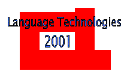

|

|
NAACL 2001
CALL FOR TUTORIAL PROPOSALS
|
The organizers of the Second Meeting of the North American Chapter
of the ACL invite proposals for the Tutorial Program for NAACL-2001,
to be held in Pittsburgh, Pennsylvania, USA, 2-7 June 2001. The
tutorials will be held on June 2nd.
Each tutorial should be well-focused so that its core content can be
covered in a three hour tutorial slot (plus a 30 minute break). In
exceptional cases, 6-hour tutorial slots are possible as well.
There will be space and time for between four and six three-hour
tutorials.
TUTORIALS CHAIR
Dekang Lin, Department of Computing Science, University of Alberta,
lindek@cs.ualberta.ca
SUBMISSION DETAILS
Proposals for tutorials should contain:
- A title and brief (less than 500 words) content description of the
tutorial topic.
- The names, postal addresses, phone numbers, and email addresses of
the tutorial speakers, with one-paragraph statement of the
speaker's(s') research interests and areas of expertise.
- Any special requirements for technical needs (computer infrastructure,
etc.)
Proposals should be submitted by electronic mail, in plain ASCII
(iso8859-1) text as soon as possible, but no later than December 20,
2000.
Please E-mail proposals to
lindek@cs.ualberta.ca, with the subject
line: "NAACL 2001 TUTORIAL PROPOSAL".
Please Note: Proposals will not be accepted by regular mail or fax.
PRACTICAL ARRANGEMENTS
Accepted tutorial speakers must provide descriptions of their
tutorials for inclusion in the Conference Registration material by
February 14, 2001. The description must be provided in three formats:
a latex version that fits onto 1/2 page; an ASCII (iso8859-1) version
that can be included with the email announcement; an HTML version that
can be included on the Conference home page.
Tutorial speakers will provide tutorial materials, at least containing
copies of the overhead sheets used, by April 25, 2001.
FINANCES
The current NAACL policy is that tutorials are reimbursed at the
following rate: $500 per session plus $25 per registrant in the
range 21-50 plus $15 per registrant in excess of 50. Note that this
is per tutorial, not per presenter: multiple presenters will split the
proceeds, the default assumption being an even split. The NAACL does
not usually cover travel expenses except where the presenter(s) are
not independently attending the conference and getting travel
reimbursed.
IMPORTANT DATES
Submission deadline for Tutorial Proposal: 20-Dec-00
Notification of acceptance of Tutorial Proposal: 10-Jan-01
Tutorial descriptions due to Tutorial Chair: 14-Feb-01
Tutorial course material due to Tutorial Chair: 25-Apr-01
Tutorials Date: 02-Jun-01